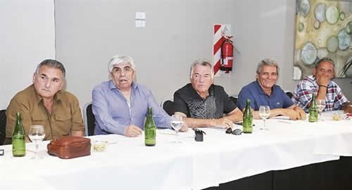

Real Chubut - Agencia de Noticias


Barrionuevo se acerca al Gobierno y deja a Moyano sin respaldo para el 21-F

"EN VEZ DE IR A LA JUSTICIA, CONVOCA A UNA MARCHA", CUESTIONÓ EL MINISTRO DIETRICH - El gastronómico desertó de la marcha convocada por el camionero y lo dejó prácticamente sin respaldo de gremios cegetistas. Sólo apoyarán los movimientos sociales y las dos CTA de Micheli y Yasky.
Luis Barrionuevo volvió a ser Luis Barrionuevo. El gastronómico desertó de la marcha convocada por Hugo Moyano para el 21 y envió señales de acercamiento al Gobierno. Lo hizo a través de su delegado en la CGT, el triunviro Carlos Acuña, quien ratificó el apoyo del sector a los reclamos del gremio de los camioneros y en el mismo acto comunicó que no participará de la protesta que su propio sector promovió en la cumbre de sindicalistas opositores organizada por Barrionuevo en Mar del Plata el 18 de enero.
Se trata de la principal baja sufrida por Moyano en la movilización pautada en la avenida 9 de Julio. Los más tempraneros en dar a conocer que no participarían fueron los "gordos" de los grandes gremios de servicios y los "independientes" con buen diálogo con el Gobierno. Les siguió Víctor Santa María, del gremio de encargados, a pesar de haber sido partícipe de la reunión de Consejo Directivo de la CGT en la que el camionero se hizo respaldar por una mayoría transitoria de dirigentes.
Así, la marcha contra Mauricio Macri tendrá como eje Camioneros y un grupo reducido de sindicatos de la CGT entre los que se cuenta la Asociación Bancaria, de Sergio Palazzo, y los siempre leales a Moyano. Por lo demás los respaldos serán por fuera de la estructura tradicional de la central obrera: estarán las dos CTA, de Hugo Yasky y Pablo Micheli, y movimientos sociales como la Confederación de Trabajadores de la Economía Popular (CTEP). Y también se prevé la adhesión de sectores políticos referenciados en Cristina de Kirchner, una de las excusas de las que se valió Acuña para bajarse de la convocatoria.
"Tenemos sectores políticos que se cuelgan a un reclamo de los trabajadores que no corresponde que se politice. Le damos argumento al mismo Gobierno para decir que los mandó Cristina y no es así", avisó ayer Acuña en diálogo con el programa Toma y Daca, por radio El Mundo. El mismo argumento había sido utilizado dos años atrás por Barrionuevo para bajarse a último momento de una protesta frente al monumento al trabajo, en el centro porteño, organizada entonces por todas las versiones en las que estaba dividida la CGT. En esa ocasión el gastronómico alegó que lo hacía por la presencia del "PJ residual".
La deserción, que se confirmará este miércoles en un encuentro que mantendrá la dirigencia de la ex CGT Azul y Blanca, con Barrionuevo como máxima figura, será un golpe político dañino para Moyano y los opositores pero no implicará una merma significativa de participantes. El sector del gastronómico no tiene por costumbre realizar aportes logísticos significativos en manifestaciones que no sean propias.
Tampoco resultó una acción sorpresiva para quienes hasta ayer eran aliados de Barrionuevo y menos para sus rivales o para el Gobierno. De hecho en la CGT circulaba desde mediados de semana la versión de que el gastronómico se había puesto en contacto con dirigentes y funcionarios de Cambiemos con los que mantiene diálogo frecuente, como Daniel Angelici o Gustavo Arribas, para ofrendarle al Gobierno la baja de Acuña e incluso la suya propia a cambio de retomar un vínculo que permanecía deteriorado desde agosto pasado, cuando tras una marcha de la central Macri del Ejecutivo a Ezequiel Sabor, entonces viceministro de Trabajo y de buena relación con el gastronómico y luego destinado a la embajada argentina en México.
La vuelta de tuerca en el plano sindical de Barrionuevo no parece disociada de la postura que exhibió hasta ahora su esposa, la diputada nacional Graciela Camaño, en contra de las negociaciones abiertas en el PJ para explorar una eventual unidad entre su sector, el Frente Renovador de Sergio Massa, el espacio de Florencio Randazzo y el de Cristina de Kirchner. En el Ejecutivo juran que no hubo promesa alguna al sindicalista para torcer su voluntad. Pero no descartan reanudar algún tipo de nexo en las instancias que necesariamente los pondrán en una misma mesa como la paritaria de hoteleros y gastronómicos o las negociaciones por los fondos de las obras sociales sindicales.
En esa línea los que conocen desde hace décadas al gremialista -desde cualquier lugar del mostrador- afirman que nunca tuvo como objetivo romper con el Gobierno. Su acercamiento a Moyano fue alimentado por las causas judiciales que los tienen a ambos como investigados, como las que instruyen los jueces federales Sandra Arroyo Salgado (San Isidro) y Luis Armella (Quilmes), que exploran un entramado de facturas apócrifas y que derivaron en allanamientos a sendas organizaciones gremiales así como la de empleados de estaciones de servicio, de Acuña, a mediados del año pasado. Su propósito era reanudar el flujo de fondos hacia su obra social y aminorar el ritmo de las investigaciones, pero nunca llegar al punto de no retorno con Macri al que arribó semanas atrás el camionero.
Desde el gabinete, sólo una voz se alzó durante el fin de semana para cuestionar al camionero. Fue la del ministro de Transporte, Guillermo Dietrich, quien en declaraciones periodísticos sostuvo que Moyano, "en vez de ir a la Justicia" a dar explicaciones "plantea una marcha", y agregó que su convocatoria "prácticamente no tiene acompañamiento del movimiento sindical" ni de los sindicatos del transporte. "En vez de ir a la Justicia a responder las acusaciones, plantea esta marcha que prácticamente no tiene acompañamiento del movimiento sindical, ni de casi ninguno de los sindicatos del transporte", aseveró el funcionario. Para Dietrich, Moyano "no está acompañando el proceso de cómo mejoramos las condiciones para generar trabajo en la Argentina". Y en la misma línea consideró que "todos tenemos que aportar, al clima de diálogo" del país.
Fuente: Ambito